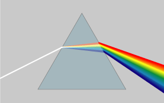

| 1-. | Astronomía amateur |
La astronomía amateur es la realizada por astrónomos no profesionales. Se suele considerar astrónomo amateur a aquel astrónomo aficionado que no solo observa el cielo sino que además contribuye a la astronomía con sus propias observaciones. En muchas ocasiones, la frontera entre astrónomos profesionales y amateur es muy tenue porque algunos de ellos han contribuido de manera destacada al desarrollo de la astronomía o a nuestro conocimiento del cielo nocturno.
Esta denominación es discutida dada la aún más leve diferencia entre los astrónomos amateur y aficionados.
La observación visual ha sido tradicionalmente la primera actividad realizada dentro de la astronomía amateur. Por lo general, los primeros pasos se dan contemplando el cielo a simple vista, sin ayuda de ningún instrumento óptico. Con el paso del tiempo, es habitual que se siga observando con ayuda de prismáticos, para luego pasar al uso de un telescopio. En los últimos tiempos esto está cambiando drásticamente ya que las nuevas tecnologías CCD e Internet están abriendo posibilidades insospechadas hace menos de una década.
Las diferentes ramas en las que se puede dividir la observación visual, son esbozadas a continuación:
Solar: Para observadores con experiencia, ya que es necesario adoptar medidas de seguridad. |
|
 | |
Video |
|

Astrono Chile
| 2-. | Astrofísica estelar |
| Se llama Astrofísica estelar al estudio de la física de las estrellas; su formación, evolución y final, así como sus propiedades y distribución. Una herramienta fundamental en el estudio de las estrellas es el diagrama de Hertzsprung-Russell. El estudio de las estrellas y de su evolución es imprescindible para avanzar en nuestro conocimiento del universo, puesto que ellas constituyen los módulos básicos que componen el mismo. La astrofísica estelar hace uso de la observación y el entendimiento teórico, así como también de simulaciones numéricas de la composición interna de las estrellas. La formación de las estrellas se produce en regiones densas de polvo y gas molecular, conocidas como nebulosas interestelares. La fuerza de gravedad acerca a los átomos de hidrógeno hacia el centro de la acumulación, haciéndolo más y más denso. Llega un punto en que sus velocidades son tan grandes que el protón de un núcleo de hidrógeno logra vencer la repulsión eléctrica del núcleo en el que impacta, fusionándose con él y otros más hasta formar un núcleo estable de helio. Una estrella desde su nacimiento tiene diferentes fases de evolución. En sus primeras etapas como embrión es rodeada por los restos de la nube de gas desde la cual se formó. Esa nube de gas es gradualmente disipada por la radiación que emana de la estrella, posiblemente quedando atrás un sistema de objetos menores como planetas, etc. Pasada la etapa de la infancia, una estrella entra a su madurez, que se caracteriza por un período largo de estabilidad durante el cual, en su núcleo, el hidrógeno se va convirtiendo en helio, liberando enormes cantidades de energía. A esa etapa de estabilidad de la estrella se la llama secuencia principal. Las características de la estrella resultante dependerán de la magnitud de su masa. Cuanto más masiva sea la estrella, mayor será su luminosidad y con mayor velocidad agotará el hidrógeno de su núcleo, lo que la hará más luminosa, más grande y más caliente. La rápida fusión de hidrógeno en helio también implica un agotamiento de las reservas del primero más pronto en estrellas masivas que para las de menor tamaño. Para una estrella como el Sol su permanencia en la secuencia principal es de unos 10 mil millones de años; una estrella diez veces más masiva será 10 000 veces más brillante pero durará en la secuencia principal sólo unos 100 millones de años. Cuando todo el hidrógeno del núcleo de la estrella se haya convertido en helio, ésta comenzará su desarrollo. La fusión del helio requiere una mayor temperatura en el núcleo, por lo que la estrella incrementará tanto su tamaño como la densidad de su núcleo. |
|
Video |
|
| 3-. | Astronomía extragaláctica |
| Se llama astronomía extragaláctica al estudio de objetos fuera de la Vía Láctea. La astronomía extragaláctica nació como tal cuando Edwin Hubble descubrió las Cefeidas en la nebulosa de Andrómeda, confirmando que por su distancia debía estar fuera de nuestra galaxia y que por su tamaño debería ser una galaxia comparable o incluso más grande que la nuestra. Más tarde se encontró que las galaxias no se encuentran aisladas, sino formando grupos de diferentes tamaños. Además, existe una organización jerárquica donde agrupaciones más pequeñas forman parte de agrupaciones mayores. |
|
Video |
|
| 4-. | Astronomía galáctica |
Se denomina astronomía galáctica a la investigación astronómica de nuestra galaxia, la Vía Láctea. La diferencia entre astronomía galáctica y astronomía extragaláctica sólo se empezó a hacer a principios del siglo pasado, cuando las observaciones de Edwin Hubble mostraron sin lugar a dudas que la nebulosa de Andrómeda era una galaxia similar a la nuestra, y a una considerable distancia de ella. Los objetos de interés en nuestra galaxia son muchos, incluyendo estrellas, nubes interestelares —-que es donde la formación estelar se realiza—-, nuestro centro galáctico —-que estamos casi seguros posee un agujero negro—-, etc. |
|
 | |
Video |
|
| 5-. | Astronomía ultravioleta |
La astronomía por rayos ultravioletas utiliza una radiación electromagnética cuyas longitudes de onda van aproximadamente desde los 400 nm, el límite de la luz violeta, hasta los 15 nm, donde empiezan los rayos X. La radiación ultravioleta puede producirse artificialmente mediante lámparas de arco; la de origen natural proviene principalmente del Sol. La astronomía ultravioleta se ha practicado desde comienzos de la década de 1960, con la ayuda de detectores montados en satélites artificiales que proporcionan datos sobre objetos estelares inaccesibles desde la superficie de la Tierra. Uno de estos satélites es el Explorador Ultravioleta Internacional, lanzado en 1978. La atmósfera de la Tierra impide que la mayor parte de la radiación ultravioleta que proviene del espacio exterior llegue a su superficie. Sin embargo, la luz ultravioleta con una longitud de onda entre 410 y 300 nm, llamada 'región ultravioleta cercana' puede alcanzar la superficie terrestre a través de la atmósfera. La radiación ultravioleta con una longitud de onda entre 300 y 10 nm solamente se puede detectar mediante instrumentos de observación situados por encima de la atmósfera de la Tierra. Estos instrumentos de observación incluyen telescopios y satélites artificiales en el espacio. Un telescopio enviado a una altitud de 40 km, es decir, casi por encima de la capa de ozono de la atmósfera, puede observar la luz ultravioleta de hasta unos 200 nm. Para observar longitudes de onda menores de 200 nm, el dispositivo de observación tiene que estar colocado por encima de la atmósfera terrestre. Los telescopios situados en globos o pequeños cohetes son de gran utilidad, pero su tiempo de observación se ve limitado a unos cuantos minutos en el caso de un cohete y a algunas horas cuando se trata de un globo. Desde 1968 la mayor parte de las observaciones del ultravioleta medio y lejano se han efectuado desde telescopios situados en la órbita de la Tierra. (La región ultravioleta entre 300 y 200 nm se conoce como el 'ultravioleta medio'. El 'ultravioleta lejano' se encuentra entre 200 nm y aproximadamente 91 nm). Algunos de los satélites artificiales puestos en órbita para detectar el ultravioleta son: el Observatorio Astronómico en Órbita, el Observatorio Astronómico Copérnico, el Satélite Europeo TD-1, el Satélite Astronómico de los Países Bajos, el Observatorio Astronómico UIE, el telescopio espacial Hubble y, más recientemente, el Explorador de la Evolución de Galaxias (GALEX). El Explorador Ultravioleta Extremo exploró gran parte de la región ultravioleta desde 91 hasta 10 nm, llamada el ultravioleta extremo, zona difícil de detectar debido a la continua absorción de fotones causada por la ionización de los átomos de hidrógeno y helio interestelares. |
|
|  | |
Video |
|